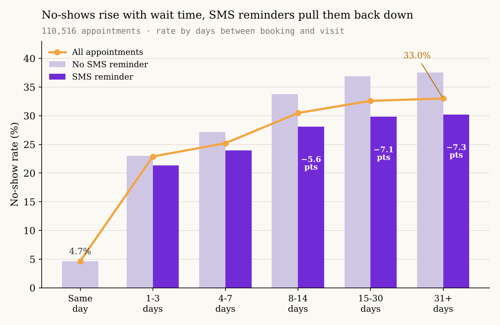

Why Do Patients Miss Clinic Appointments?
Every missed clinic appointment is a slot another patient could have used. Using about 110,000 public appointment records from Vitória, Brazil, I built a SQL Server database and analysis to find out which factors make a patient more likely to miss an appointment, and what a clinic could do about it. Explore the interactive dashboard below: filter by neighbourhood or age group, or click a bar.
The longer the wait, the more patients miss
No-show rate by days between booking and appointment
SMS reminders help, when compared fairly
No-show rate with and without an SMS, within the same wait time
Which neighbourhoods account for most no-shows
Top 20 neighbourhoods by number of no-shows, with the cumulative share. Click a bar to filter the dashboard.
No-show rate by age group
Click a bar to filter by that age group
No-show rate by weekday
Saturday has very few appointments, so its rate is not reliable
The question: what makes a patient more likely to miss a booked appointment, and do SMS reminders actually help? I expected long waits between booking and the visit to matter, but I wanted to check whether reminders still made a difference once wait time was taken into account.
Methods
The data
The data is the public Medical Appointment No Shows dataset (Kaggle), with 110,527 appointments booked between late April and early June 2016. Each row has the patient, the booking and appointment dates, the patient's age and neighbourhood, health flags, whether an SMS reminder was sent, and whether the patient showed up.
Designing the database
The raw file is one flat table where every neighbourhood name and patient repeats thousands of times. I normalized it into three tables, patients, neighbourhoods and appointments, linked by primary and foreign keys. CHECK constraints stop impossible values from getting in, and SQL Server calculates the wait time itself as a persisted computed column:
CREATE TABLE dbo.appointments (
appointment_id INT NOT NULL CONSTRAINT pk_appointments PRIMARY KEY,
patient_id BIGINT NOT NULL CONSTRAINT fk_appt_patient REFERENCES dbo.patients (patient_id),
neighbourhood_id INT NOT NULL CONSTRAINT fk_appt_neighbourhood REFERENCES dbo.neighbourhoods (neighbourhood_id),
scheduled_at DATETIME2(0) NOT NULL,
appointment_date DATE NOT NULL,
age_at_appointment TINYINT NOT NULL CONSTRAINT ck_appt_age CHECK (age_at_appointment BETWEEN 0 AND 120),
sms_received BIT NOT NULL,
no_show BIT NOT NULL,
-- days between booking and visit, calculated and stored by SQL Server
wait_days AS DATEDIFF(DAY, CAST(scheduled_at AS DATE), appointment_date) PERSISTED,
CONSTRAINT ck_appt_dates CHECK (appointment_date >= CAST(scheduled_at AS DATE))
);Health flags such as hypertension are stored on each appointment, not on the patient, because they record what was true at that visit and can change over time.
Loading the data and checking its quality
A Python loader (Pandas and SQLAlchemy) reads the CSV, fixes misspelled column names from the source, converts the dates, and checks every row against a set of rules. Rows that break a rule are not silently dropped. They are saved to a load_rejects table with the reason, so the decision can be reviewed later. The whole load runs in one transaction, so a failure never leaves the database half loaded.
# Each rule: (reason saved in load_rejects, rows that break it)
rules = [
("PatientId is not a whole number", df["patient_id"].isna()),
("Age outside 0 to 120", ~df["age_at_appointment"].between(0, 120)),
("Appointment date is before the booking date",
df["appointment_date"] < df["scheduled_at"].dt.normalize()),
("Handicap level outside 0 to 4", ~df["handicap_level"].between(0, 4)),
("Gender is not F or M", ~df["gender"].isin(["F", "M"])),
("Duplicate AppointmentID", df["appointment_id"].duplicated(keep="first")),
]| Reason | Rows |
|---|---|
| PatientId is not a whole number | 5 |
| Appointment date is before the booking date | 5 |
| Age outside 0 to 120 | 1 |
| Total rejected | 11 |
110,516 of 110,527 rows (99.99%) passed every check.
Analysis in T-SQL
All of the analysis lives in the database as T-SQL views, so any report or dashboard reads the same numbers. One view joins the tables and adds readable groups (wait time, age group, weekday). The others calculate the no-show rate by each factor. To see which neighbourhoods drive the problem, I wrote a Pareto view using window functions:
-- Pareto: which neighbourhoods account for most of the no-shows
CREATE OR ALTER VIEW dbo.vw_no_show_pareto_by_neighbourhood AS
WITH totals AS (
SELECT neighbourhood_name,
COUNT(*) AS appointments,
SUM(CAST(no_show AS INT)) AS no_shows
FROM dbo.vw_appointment_details
GROUP BY neighbourhood_name
)
SELECT neighbourhood_name, appointments, no_shows,
CAST(100.0 * no_shows / SUM(no_shows) OVER () AS DECIMAL(5,2)) AS share_of_no_shows_pct,
CAST(100.0 * SUM(no_shows) OVER (ORDER BY no_shows DESC, neighbourhood_name ROWS UNBOUNDED PRECEDING)
/ SUM(no_shows) OVER () AS DECIMAL(5,2)) AS cumulative_share_pct
FROM totals;A stored procedure, usp_no_show_summary, returns the same summary for any date range or neighbourhood, which is the kind of tool a clinic manager could run every week.
Results
Wait time is the biggest factor
| Wait time | Appointments | No-shows | No-show rate |
|---|---|---|---|
| Same day | 38,560 | 1,792 | 4.65% |
| 1 to 3 days | 14,673 | 3,359 | 22.89% |
| 4 to 7 days | 17,509 | 4,413 | 25.20% |
| 8 to 14 days | 12,025 | 3,664 | 30.47% |
| 15 to 30 days | 17,371 | 5,661 | 32.59% |
| 31+ days | 10,378 | 3,425 | 33.00% |
| All | 110,516 | 22,314 | 20.19% |
Patients booked for the same day almost always come (95%). Once the wait is more than a month, one in three appointments is missed, about 7 times the same-day rate.
SMS reminders help, but only a fair comparison shows it
Reminders were mostly sent for appointments booked far ahead, which already have high no-show rates. If you compare everyone who got an SMS with everyone who did not, reminders look like they make things worse. Comparing within the same wait time tells the real story:
| Wait time | No SMS | SMS sent | Points lower with SMS |
|---|---|---|---|
| 1 to 3 days | 23.00% | 21.30% | 1.70 |
| 4 to 7 days | 27.11% | 23.97% | 3.14 |
| 8 to 14 days | 33.76% | 28.11% | 5.65 |
| 15 to 30 days | 36.87% | 29.80% | 7.07 |
| 31+ days | 37.53% | 30.20% | 7.33 |
Same-day appointments are left out because none of them received an SMS.

Where the no-shows come from
| Neighbourhood | Appointments | No-shows | No-show rate | Cumulative share |
|---|---|---|---|---|
| Jardim Camburi | 7,717 | 1,465 | 18.98% | 6.57% |
| Maria Ortiz | 5,804 | 1,219 | 21.00% | 12.03% |
| Itararé | 3,514 | 923 | 26.27% | 16.16% |
| Resistência | 4,430 | 905 | 20.43% | 20.22% |
| Centro | 3,333 | 703 | 21.09% | 23.37% |
The top 5 neighbourhoods account for 23.4% of all no-shows. Count and rate tell different stories: Jardim Camburi has the most no-shows simply because it has the most appointments, and its rate is actually below average, while Itararé has a much higher rate. Weekday barely matters, with rates between 19.4% and 21.2% from Monday to Friday.
What a clinic could do with this
- Offer same-day or next-few-days slots where possible, since short waits have far fewer no-shows.
- Send SMS reminders for every appointment booked more than a week ahead.
- Look at neighbourhoods with high rates, not just high counts, when planning outreach.
What I learned
The most useful lesson was to check whether a comparison is fair before trusting it. The simple SMS comparison pointed the wrong way, and only grouping by wait time showed the real effect. I also learned how much easier analysis becomes when the database is designed well: with clean keys, constraints and views, every chart on this page is a short query. And I hit a classic SQL Server setting, QUOTED_IDENTIFIER, that has to be on to create a persisted computed column.
- SQL Server
- T-SQL
- Python
- Pandas
- SQLAlchemy
- Docker
- Plotly